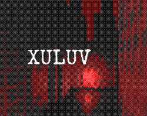
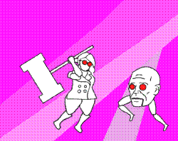
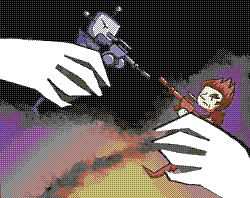
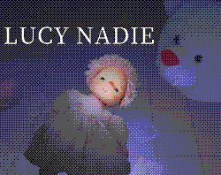

Small horror/action FPS where you feel the presence of a mysterious entity. The entity's name is Xuluv and she needs a healthy host, a host that can be anyone around you.
Made for the BenBonk Game Jam #1 with the theme "Trust No One ". Xuluv was a collaborative project consisting on Ignacio Pérez Burgos(music/3d art), Juan Pablo Pérez Burgos(3d art), Felipe Pérez Burgos(music) and me(programming).
First free game after a long hiatus making stuff as "Retsa", switching platforms from GameJolt to Itch.
Play online/download at itch.io.
Kill enemies to grow, hurt yourself to shrink. Recursion Betty is an endless experimental game where you can get infinitely big or infinitely small (in theory, in practice the game is going to crash at a certain point).
This project was made in 48hs for the MashUp Game Jam with the theme "size matters". Felt this was a great opportunity to make something out of my obsession with infinity, recursion, fractals and the like.
Music by Ignacio Pérez Burgos.
Play online/download at itch.io.
A game that plays itself, just watch an army of trolls fight to death with an army of robots. The only player input is changing each unit's price so the AI can spawn more of them.
Trolls vs Robots was a collaborative project with artist Julieta Rivero, musician/3d artist Ignacio Pérez Burgos, 3d artist Juan Pablo Pérez Burgos. It was made in 48hs for the Game Maker's Toolkit jam with the theme "Out of control".
An ambitious idea, we all look back at this game with lukewarm feelings, an idea that couldn't be easily fleshed out in such a short amount of time, but a fun experience nonetheless.
Play online/download at itch.io.
Possess Lucy and kill all the demonic toys in this boss rush shoot em up.
Made for the "Jamloween" jam, a halloween jam by Crevis, a gamedev group from Argentina. A really fun project, where i used real life photos of toys for the main character and enemies. Ended up with a "cursed" feeling that i intent to replicate in the future.
Made a video in spanish about the development process
Play online/download at itch.io.
